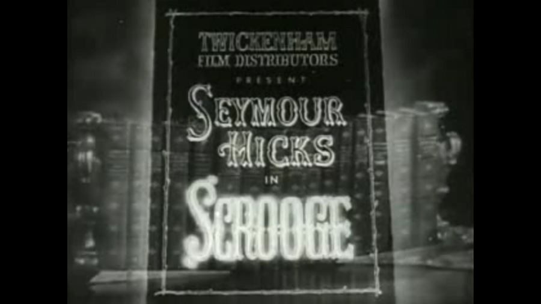

1913

CAST
Ebenezer Scrooge
-
Seymour Hicks
Plus:
William Lugg
Leedham Bantock
J. C. Buckstone
Dorothy Buckstone
Leonard Calvert
Osborne Adair
Adela Measor
Ellaline Terriss
CREATIVE TEAM
Director
-
Leedham Bantock
Screenplay
-
Seymour Hicks
PRODUCTION
A 1913 British black and white silent film based on the 1843 novella. It starred Seymour Hicks as Ebenezer Scrooge. In the United States it was released in 1926 as Old Scrooge.
The film's cast included Seymour Hicks as Scrooge. Hicks had played the role of Scrooge regularly onstage since 1901 before this, his first appearance in the role in film. He reprised the role of Scrooge in the 1935 film Scrooge.
Scrooge was a Zenith Film Company production, by whom it was also distributed on its release date in September 1913. Some scenes in the black and white 35mm film were colour toned.